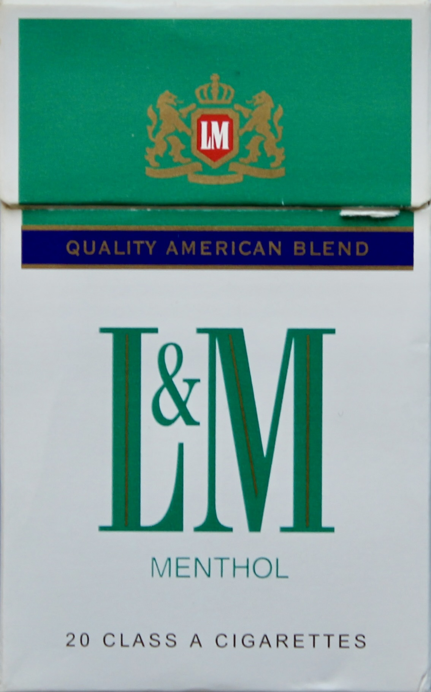
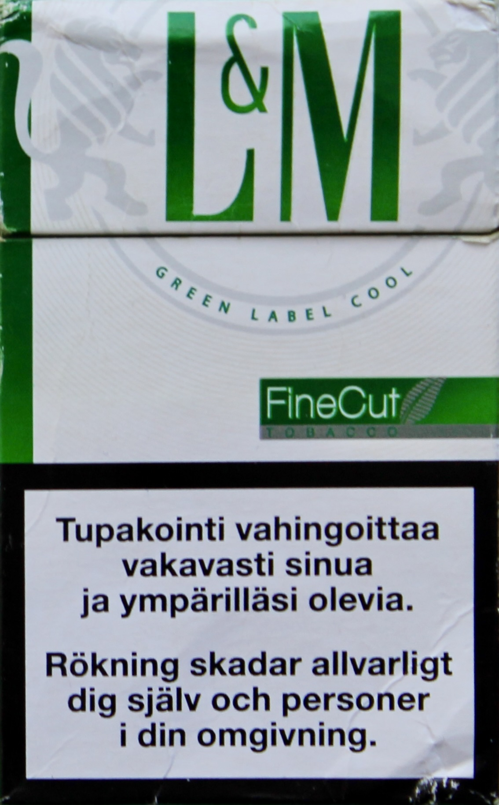
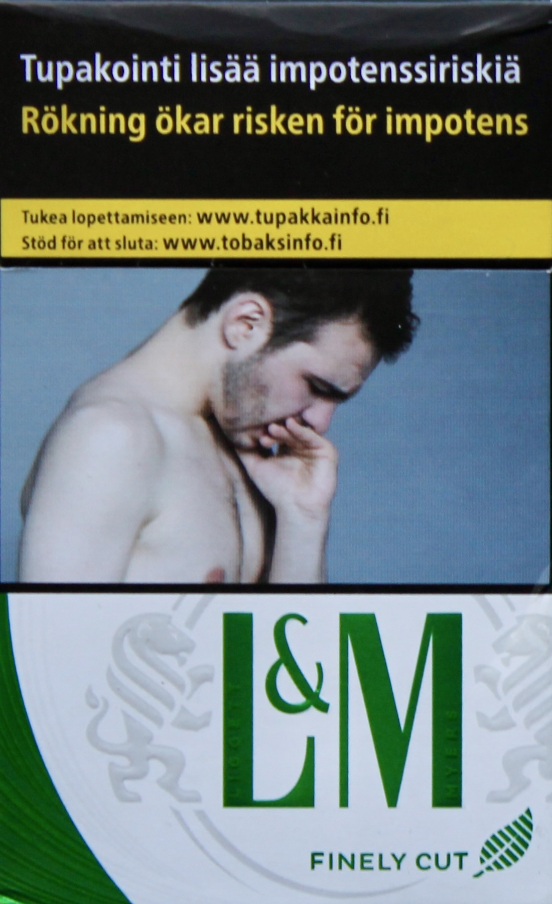

Päätoimittajalta
Joni Hammar
11.2.2023
Lukuaika
5min



L&M vihreä kautta aikojen
L&M on yksi amerikkalaisten savukkeiden suuria nimiä, joka on niittänyt erityistä suosiota Euroopassa ja Venäjällä. Mentoli tupakka on nykyään vain haave kotimaiselle kuluttajalle, eikä kunnon mentolitupakkaa ole saanut kaupoista vuosiin. Jotain vihreää tavaraa tosin sai vielä viime aikoina tupakkahyllyltä, mutta mentoliksi sitä ei voisi kutsua. Eihän askeissa edes mainittu mentolia, tuote oli enää erikoiselle maistuva ”green label”. Tänä vuonna voimaan astunut lakiuudistus puolestaan kielsi tupakalta ”tunnusomaisen aromin,” minkä johdosta viimeinenkin mentolin häive on kadonnut vihreissä kuoseissa myytävästä tuotteesta.
Mitä tapahtuikaan mentolitupakalle, sen tietää pitkän linjan kuluttaja. Meille, jotka emme ole todistaneet rapautumista, on arkeologia keinomme tietää. Vihreän tupakan tarinaa on jäänyt meille Virginian toimitukseen kertomaan kolme muinaisjäännöstä: Vanha venäläinen-, vanhahko suomalainen- ja uusi suomalainen L&M Vihreä aski.
Vanha venäläinen aski on vuoden 2000 tienoilta. Sen ulkoasu on harmoninen ja ylpeä, varoitustekstit eivät hypi silmille, graafinen suunnittelu tuo askiin arvokasta tunnelmaa. Aski on asianmukainen sen kertoessa tervan ja nikotiinin määrän – jotka ovat 12mg ja 0,9mg – mutta niiden ohessa myös muutaman sanasen tupakan terveyshaitoista. Savukkeet ovat valmistettu Venäjällä.
Itse tupakka on kuin askinsa: vanha ja asianmukainen. Vaikka itse mentoli on jo vuosien saatossa haihtunut savukkeesta, on jäljelle jäänyt hyvä tupakka. Tupakan tuoksu on oikein kutsuva, syvä ja vaalea. Kun savukkeen sytyttää huomaa sen palavan oikein, vaikka kyseessä on vuosikerta. Maku on ironista kyllä erittäin maustamaton että peittelemätön, hyvä itsensä laadun ja ammattitaidon takia. Maku on riittoisa ja tupakoidessa mieleen tulee oikea kasvi.
"Kenties leikkisämpi kuin venäläinen"
Kymmenisen vuotta uudempi, ”suomalainen” aski on jo saanut kylkeensä varoitustekstit, jotka otettiin EU maissa käyttöön vuonna 2001. Askin ulkoasu on toki aavistuksen nostalginen varoitusteksteineen, joita ei viime vuosina ole enää näkynyt, mutta muutoin askin ulkoasu ei tuo liiemmin positiivisia tuntemuksia. Askissa on ilmoitettu tervan määräksi 6mg, nikotiinin 0,4mg ja hään 7mg. Savukkeet on valmistettu EU:ssa.
Askin aukaistessa ja tuotetta haistaessa voi huomata tupakan olevan hennomman tuoksuista kuin venäläinen serkkunsa, mutta tuoksua siivittää hienoinen viileä tuulahdus. Itse tupakka maistuu hyvältä, joskaan ei yhtä sisukkaasti kuin venäläinen L&M. Makua virkistää mentolin raikas vivahdus, joskin maku on epäilemättä vain osa alkuperäisestä raikkaudesta. Savuke ei ole erityisen vahva, mutta hauska poltettava kaikkinensa. Kenties leikkisämpi kuin venäläinen.
Uusin vihreä aski on kieltämättä saavuttanut harmonian ulkoasussaan ja - vaikka askia somistaakin ilmeisesti aktiin kykenemätön mies - kaupasta haettu täysi aski tuo mukavan miehisen ja voimakkaan olon. Hymy vain hyytyy, kun tupakkaan on saanut tulen, sillä se maistuu huonolta paperilta. Ikävän maun takana ei ole myöskään nikotiinin miellyttäviä vaikutuksia havaittavissa, mikä saa savukkeen hyvin luotaantyöntäväksi.
Jos em. ”tupakkaa” kuitenkin kiskoisi barbaarisesti kuin huonoa tislettä, välinpitämättömänä ohuttakin latteammasta mausta ja henkiteitä sabotoivasta raapimisesta, voisi siitä kenties saada jonkinlaisen tuntemuksen, mutta siihen en itsekunnioituksesta ryhdy.
Mielisanontani ”tupakka on aina tupakkaa” on kyllä kokenut kolauksen, jos edellä kuvailtu tuore L&M vihreä on nykystandardeilla tupakkaa, saati hyvää sellaista. Kauheaa tupakkaa on ollut varmasti aikojen alusta asti, ensimmäisen maailmansodan britti veteraanitkin valittelivat hevosenlantamaista makua rivistön kessussa, mutta en rehellisesti usko tuon lämän vihreän tupakkaa nähneenkään. Jatkettua paperia se on.